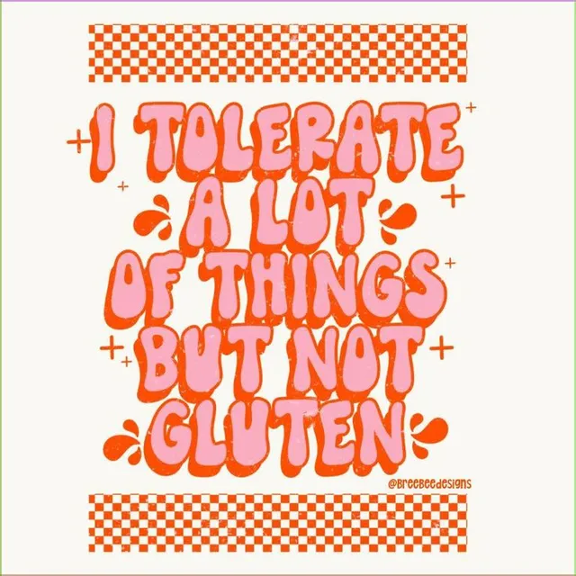
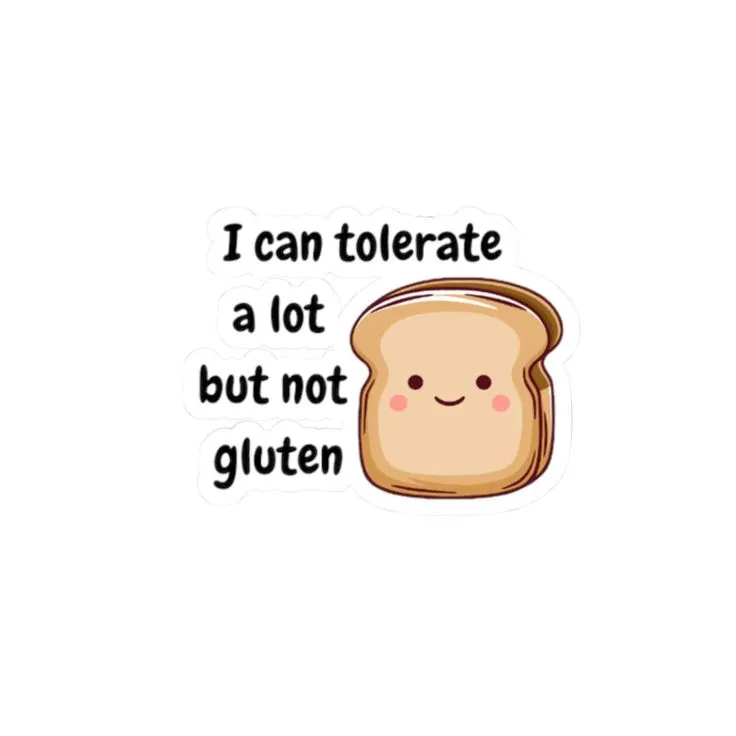
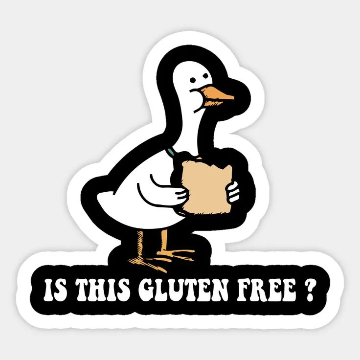
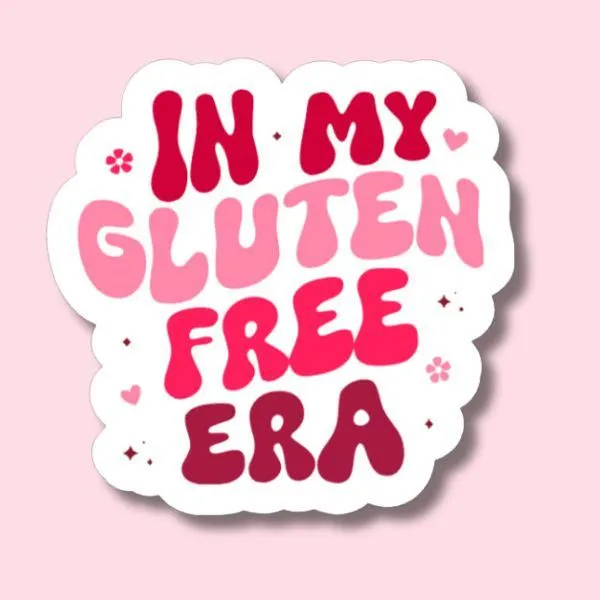

¿Qué es la celiaquía?
La celiaquía es una enfermedad. No se trata de una intolerancia al gluten como, por simplificar, se la ha definido en el pasado. Una intolerancia, por definición, no afecta al sistema inmunitario, sino que se desarrolla por otros mecanismos. En la celiaquía sí está involucrado el sistema inmunitario y, por lo tanto, no se puede decir que sea una intolerancia.
Celicioso es un blog dedicado a compartir recetas sin gluten, información útil y contenidos pensados para disfrutar de la comida con seguridad.


